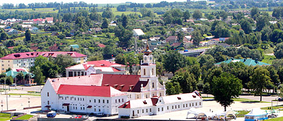

VITEBSK

Dominique: Una leyenda dice que Vitebsk fue fundada por la princesa Olga a orillas del río Dvina occidental y el río Vitba en 947. Siglos después estaba destinada a convertirse en el tesoro de talentos del mundo: Vitebsk fue el lugar de nacimiento de los artistas destacados Marc Chagall, Kazimir Malevich, Ossip Zadkine, Ivan Puni, los filósofos Nikolay Lossky y Mikhail Bakhtin ... Hoy Vitebsk es el centro cultural más grande de Bielorrusia que alberga el festival único de bazar eslavo de artes. Los principales lugares de interés de la ciudad incluyen la Plaza del Ayuntamiento, la Iglesia de la Santa Resurrección, el Palacio del Gobernador, la Catedral de la Santa Asunción y el famoso Puente de Kirov sobre el río Dvina occidental.
La ciudad de Braslav, mencionada por primera vez en las crónicas en 1065, se encuentra en el corazón del distrito de los lagos de Bielorrusia: se pueden encontrar 30 lagos en un radio de 30 km. La ciudad está rodeada de lagos. La "perla" más grande de la zona es Drivyaty, el quinto lago más grande de Bielorrusia. Puede admirar esta belleza natural desde la antigua montaña del castillo de hillfort en el centro de Braslav. La ciudad cuyo emblema lleva un símbolo cristiano, el Ojo de la Providencia, también es famosa por sus santuarios. Entre ellos se encuentra la magnífica Iglesia de la Natividad de la Bienaventurada Virgen María (finales del siglo XIX), con su maravilloso icono Braslav de la Madre de Dios, la Reina de los Lagos, la patrona de la tierra.
La ciudad a orillas del pintoresco lago Myorskoye se conoce desde 1514 como la propiedad Mereya del voivoda Ivan Sapiega, y luego la famosa familia Sviatopolk-Mirsky. El moderno Miory es una ciudad acogedora con la arquitectura de los siglos XVIII y XIX y un hermoso muelle de 500 metros. El principal hito de la ciudad es la Iglesia Neogótica Católica Romana de la Asunción de la Virgen María (Iglesia de la Asunción) construida en 1907, con iconos y esculturas raras del siglo XIX. Otros hitos notables son las composiciones escultóricas modernas: el único monumento de Europa al niño no nacido (1991), una escultura de la madre de Dios con el Niño Jesús (1998), el monumento al Papa Juan Pablo II.
El pueblo de Mosar, conocido por existir desde 1514, floreció en la época de la noble familia de los Brzostowskis. Los cónyuges Robert y Anna construyeron un magnífico palacio y la Iglesia de Santa Ana en el siglo XVII. La iglesia ha sobrevivido hasta nuestros días. Cuando el sacerdote católico Josas Bulka llegó a Mosar en 1989, dio una nueva vida a la aldea. Transformó los alrededores pantanosos en un maravilloso arboreto con esculturas religiosas, fuentes y parterres. Los hitos del Versalles bielorruso (así es como se suele llamar a Mosar) incluyen la famosa obra de Miguel Ángel Buonarroti La Lamentación de Cristo de la Basílica de San Pedro en el Vaticano, la cruz católica más alta de Bielorrusia (23 m), una estatua de 5 metros de Cristo…
El museo del gran artista del itinerario Ilya Repin se encuentra en las afueras de Vitebsk. En 1892 vendió una de sus pinturas más famosas, los cosacos de Saporog están redactando un manifiesto, a Alejandro III y compró la casa señorial de Sofiyevka que pasó a llamarse Zdravnevo. Fue allí donde creó más de 40 pinturas (Autumn Bouquet, Bielorruso, The Duel, Moon Night, In The Sun), numerosos esquizzos y bocetos ... Estas obras, así como fotos, libros y cartas están en exhibición en el museo del Finca restaurada. Entre las exhibiciones más valiosas se encuentran imágenes del Cristo y la Madre de Dios con el Niño Jesús pintadas para los iconos del estado de la iglesia Sloboda, cerca de la cual fue enterrado el padre del artista. Un callejón de tilo plantado por Repin sobrevive en Zdravneno.
La ciudad en la orilla del río Dnieper y el río Orshitsa se mencionó por primera vez en las crónicas en 1067. Los arqueólogos encontraron una armadura de cadena única con antiguas inscripciones eslavas en el lugar de un antiguo asentamiento. Los lugares de interés en Orsha incluyen la Iglesia de Saint Ilya, el Monasterio de la Santa Teofanía de Kuteinsky, la Iglesia Católica de San José y, sin duda, el magnífico complejo del colegio jesuita que se construyó en el siglo XVII siguiendo las instrucciones de Lew Sapieha. Se abrió un museo etnográfico dedicado a la vida de los bielorrusos en el siglo XIX en la construcción de un antiguo molino de agua no muy lejos de él. El legendario sistema de cohetes de lanzamiento múltiple Katyusha se probó por primera vez en combate cerca de Orsha el 14 de julio de 1941. Un complejo conmemorativo ahora recuerda los eventos de la Gran Guerra Patriótica.
Una de las ciudades más antiguas de Europa del Este se mencionó por primera vez en las crónicas, La historia de los años pasados, en 862. Polotsk era un importante centro comercial y estaba en el camino de la principal ruta comercial de los varangianos a los griegos. La ciudad es la "cuna" de la cultura y el estado bielorruso, la capital del primer principado, hogar de los famosos educadores eslavos Eufrosina de Polotsk, Francysk Skaryna, Simeón de Polotsk. La ciudad más antigua de Bielorrusia aprecia su patrimonio cultural, incluidas las majestuosas iglesias y las santidades ortodoxas, como la restaurada Cruz de Eufrosina de Polotsk.